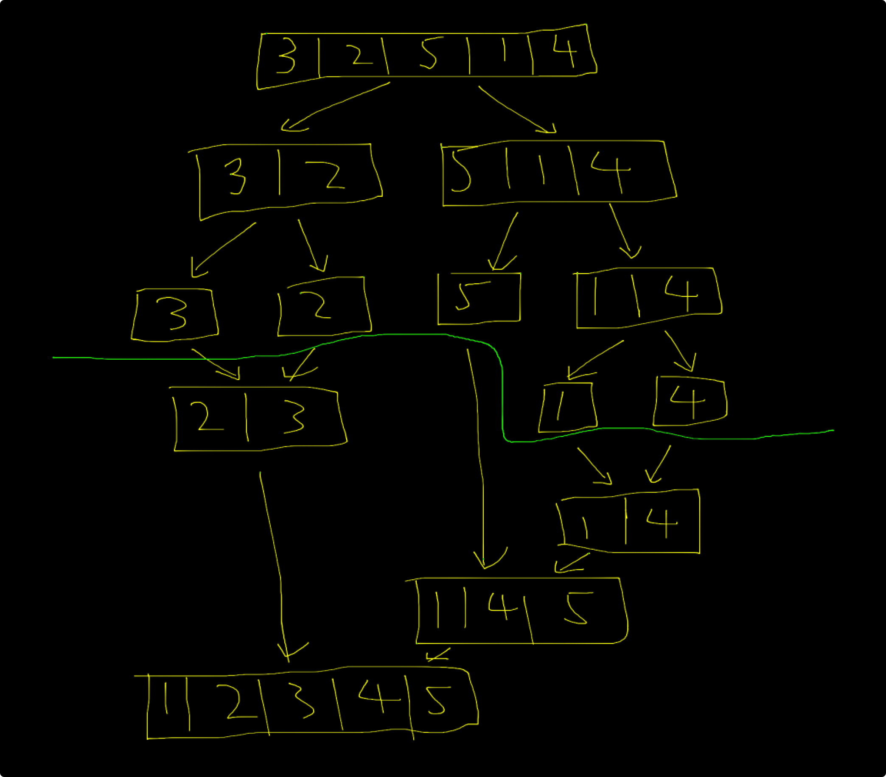
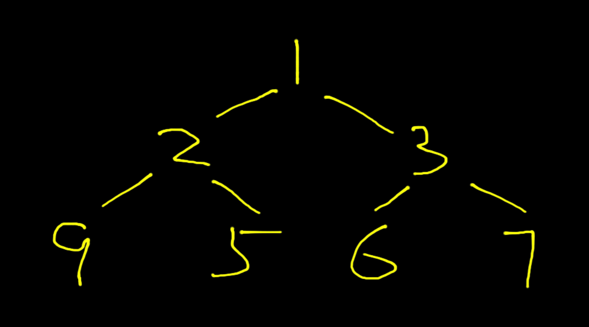

在我们的编程工作中，经常会对一组数据做排序操作，排序的算法也有很多。这里总结了几个常见的排序算法，以下默认都是升序。
冒泡排序
考虑一组数 [3, 2, 5, 1, 4]，我们想让他以升序的方式排序，那么最大的数 5 是要排在最后一个位置，4 排在倒数第二个位置，以此类推。
那怎么样才能把 5 放在最后一个位置呢？我们可以遍历数组，找到其中最大的数，并且记录他的位置（索引），然后把这个数与最后一个数交换位置即可；还有一种方法，就是从数组第一个元素开始，比较他与他后面的那个数，把这两个数中较大的数移到后面，接着到第二个元素，重复这个步骤，这样一轮遍历下来，最大的数就被移到了最后一个位置。
不论用哪一种方法，一轮遍历后，数组末尾位置的元素就是最大值，这个元素也相当于已经被排好了序。那么我们只需要对其余元素构成的数组，也就是 [2, 3, 1, 4] 这个数组排序，重复上述方法即可。
上述两种方法中，后者不需要记录每一轮遍历中最大数及其位置，由于这个比较相邻元素并把较大值后移的操作就好像把一个泡泡从数组第一个位置不断后移，泡泡里的元素是每次比较的较大值，所以这种排序算法被称为冒泡排序。
可以看出，冒泡排序算法使用了两层遍历，时间复杂度是 O(n^2)。用 Java 代码实现如下：
public static void bubbleSort(int[] ary) {
// 外层循环为遍历的轮数
for (int i = 0; i < ary.length - 1; i++) {
// 内层循环为每一轮对数组的遍历
for (int j = 1; j < ary.length - i; j++) {
if (ary[j - 1] > ary[j]) { // 比较当前元素和下一个元素的值
int tmp = ary[j - 1]; // 若当前值较大，则交换两个元素
ary[j - 1] = ary[j];
ary[j] = tmp;
}
}
}
}
选择排序
在上文讲冒泡排序每一轮的遍历时，讲到了找出最大值并把他放到合适的位置上的方法，这其实就是选择排序的思想。
我们在每一轮遍历数组时，找到最大值及其索引，然后交换他和末尾元素的位置，然后对除去这个元素后剩余元素构成的数组重复这个步骤即可。
当然，也可以改为找到每一轮中的最小值并把他放在合适的位置上，就是记录每次遍历开始位置的索引 i，同时用变量 lowIndex 标记每轮循环中值最小的元素索引，在每轮循环结束后，交换位置 i 和位置 lowIndex 的元素，第一轮结束后，位置 i 处为数组最小值；将 i + 1，第二轮遍历遍历结束并交换相应元素位置后，数组第二个位置为第二小元素；重复上述步骤，直到所有元素都排好序.
选择排序的时间复杂度也是 O(n^2)，用 Java 代码实现如下：
public static void selectSort(int[] ary) {
for (int i = 0; i < ary.length - 1; i++) {
int lowIndex = i; // 初始化 lowIndex 为数组未排序部分的第一个元素
for (int j = i + 1; j < ary.length; j++) {
// 找到未排序部分值最小的元素索引
if (ary[lowIndex] > ary[j]) {
lowIndex = j;
}
}
// 交换位置 i 和位置 lowIndex 的元素
int tmp = ary[i];
ary[i] = ary[lowIndex];
ary[lowIndex] = tmp;
}
}
归并排序
归并排序是分治法思想的体现，对于一个大数组我们不好排序，但是对于两个数排序是很方便的，所以何不将这个大数组分成两个小数组，再把每个小数组继续分，直到最终的一个小数组被分为两个只包含一个元素的数组为止。我们对这两个数比较大小，并把这两个长度为 1 的数组合并为一个长度为 2 的数组，合并后的数组就是排好序的。重复这个步骤，把两个长度为 2 的数组合并为一个长度为 4 的已排序数组，两个长度为 4 的数组合并为一个长度为 8 的数组…… 直到最终合并为一个长度和原数组相同的大数组，这个数组就是排好序的。
下面是一个示意图，绿色线上方是分割，下方是合并：

归并排序的时间复杂度是 O(nlogn)，用 Java 代码实现如下：
public static void mergeSort(int[] ary) {
if (ary.length <= 1) return;
int[] left = new int[ary.length / 2]; // 左半部分数组
System.arraycopy(ary, 0, left, 0, ary.length / 2);
mergeSort(left); // 递归调用排序
int rightLen = ary.length - ary.length / 2;
int[] right = new int[rightLen]; // 右半部分数组
System.arraycopy(ary, ary.length / 2, right, 0, rightLen);
mergeSort(right); // 递归调用排序
merge(left, right, ary); // 合并左右两个数组
}
public static void merge(int[] left, int[] right, int[] temp) {
int indexLeft = 0; // 左数组索引
int indexRight = 0; // 右数组索引
int indexTemp = 0; // 合并后的数组索引
// 按升序合并两个数组
while (indexLeft < left.length && indexRight < right.length) {
if (left[indexLeft] < right[indexRight]) {
temp[indexTemp++] = left[indexLeft++];
} else {
temp[indexTemp++] = right[indexRight++];
}
}
while (indexLeft < left.length) {
temp[indexTemp++] = left[indexLeft++];
}
while (indexRight < right.length) {
temp[indexTemp++] = right[indexRight++];
}
}
快速排序
快速排序的思想是，从数组中选出一个元素，这个元素也被成为主元(pivot)，根据这个主元，把数组分为两部分。第一部分中所有的元素都小于等于主元，第二部分中所有的元素都大于主元。这样从宏观来看，第一部分数组、主元、第二部分数组这三者相当于已经排好序。接着对第一部分和第二部分数组递归调用该排序算法即可。
至于主元的选择，一般选择数组的第一个元素。主元的选择也会影响算法的效率。
快速排序的时间复杂度为 O(nlogn)，用 Java 代码实现如下：
public static void quickSort(int[] ary) {
quickSort(ary, 0, ary.length - 1);
}
public static void quickSort(int[] ary, int left, int right) {
if (right > left) {
int pivotIndex = partition(ary, left, right);
quickSort(ary, left, pivotIndex - 1); // 递归左半部分数组
quickSort(ary, pivotIndex + 1, right); // 递归右半部分数组
}
}
// 分割数组 ary[left:right] 部分
public static int partition(int[] ary, int left, int right) {
int pivot = ary[left]; // 选取数组第一个元素作为主元
int low = left + 1;
int high = right;
while (low < high) {
while (low < high && ary[high] >= pivot) {
high--;
}
while (low < high && ary[low] <= pivot) {
low++;
}
// 交换两个数，把大数放右边，小数放左边
if (high > low) {
int temp = ary[high];
ary[high] = ary[low];
ary[low] = temp;
}
}
while (high > left && ary[high] >= pivot) {
high--;
}
if (pivot > ary[high]) {
ary[left] = ary[high];
ary[high] = pivot;
return high;
} else {
return left;
}
}
插入排序
首先将数组的第一个元素作为已排好序的元素，从第二个元素向后遍历，若第二个元素比第一个元素的值大，则将第二个元素插入第一个元素前，否则将他插入第一个元素后；接着拿下一个元素依次与它之前已排好序的元素比较，直到插入到合适的位置；重复这一步骤，直到所有元素都排好序。
插入排序时间复杂度为 O(n^2)，用 Java 代码实现如下：
public static void insertSort(int[] ary) {
// 第一个元素作为已排好序的元素，所以从第二个元素开始遍历
for (int i = 1; i < ary.length; i++) {
int key = ary[i]; // 当前元素
int j = i - 1;
// 拿当前元素与它前面的元素依次比较，不满足条件则将元素后移，否则插入元素
while (ary[j] < key && j >= 0) {
ary[j] = ary[j--]; // 后移元素
}
ary[j] = key; // 插入当前元素
}
}
希尔排序
对于插入排序，如果数组中大部分元素都是有序的，那么每次比较的次数将会大大减少，这样就能提高算法的效率。
那么怎样才能让数组中的大部分元素有序呢？有个计算机科学家发明了一种方法，这种方法以他的名字命名，称为希尔排序。
首先，我们让数组中的元素两两一组，每组中的两个元素跨度为数组长度的一半，以数组 [6, 2, 5, 8, 4, 1, 7, 3] 为例，分组后为 [6, 4], [2, 1], [5, 7], [8, 3] 这四个数组，跨度为 4。
对每个小数组做插入排序，排序后原数组已变为 [4, 1, 5, 3, 6, 2, 7, 8]，可以看到，数组的整体有序程度有了一定提高。如果后续使用插入排序算法进行排序，会比直接对原数组做插入排序效率要高不少。
我们继续对数组分组，不过要把跨度调整为之前的一半，也就是 2。这样就分组成了 [4, 5, 6, 7], [1, 3, 2, 8]，对每个小数组做插入排序，排序后原数组变为 [4, 1, 5, 2, 6, 3, 7, 8]。接着再把跨度调整为一半，也就是 1，再做插入排序，这其实等同于直接做插入排序，最终就是排好序的数组。
其实希尔排序就是为了减少插入排序的工作量，平均时间复杂度比 O(n^2) 要小，用 Java 代码实现如下：
public static void shellSort(int[] ary) {
int j;
// 取跨度为数组长度的一半，每次减半
for (int gap = ary.length / 2; gap > 0; gap / 2) {
for (int i = gap; i < a.length; ++i) {
int temp = ary[i];
for (j = i; j >= gap && temp < ary[j - gap]; j -= gap) {
ary[j] = ary[j - gap];
}
ary[j] = temp;
}
}
}
堆排序
二叉树我们都比较熟悉，其中有这样一种二叉树，他满足以下属性：
- 是完全二叉树
- 每个节点大于等于（或小于等于）他的任意一个孩子
这样的一棵二叉树被称为二叉堆，如果他的每个节点大于等于他的任意一个孩子，那么这个二叉堆称为最大堆，反之称为最小堆。
很明显，二叉堆中的节点是排好序的。对于一组无序的数，如果我们把他构造成一个二叉堆，那么也就实现了对他的排序。下面我们来看如何构造一个二叉堆（因为是升序，我们的二叉堆是最小堆）。
我们可以用一个 ArrayList 来存储这个堆，根节点索引为 0，他的左子节点索引为 1，右子节点索引为 2。可以推断出，对于一个索引在 i 处的节点，他的左子节点索引为 2i + 1，右子节点索引为 2i + 2，父节点索引为 (i-1)/2。对于下面这个二叉堆，就可以存储为 [1, 2, 3, 9, 5, 6, 7]：

我们先构造一个二叉堆的大体结构，然后实现他相应的方法。
public class BinaryHeap {
// 用一个 ArrayList 来存储二叉堆中的节点
private List<int> list = new ArrayList<>();
public BinaryHeap() {}
// 把一个整型数组构造为一个二叉堆
public BinaryHeap(int[] ary) {
for (int elem : ary) {
add(elem);
}
}
// 向堆中添加节点
public void add(int elem) {
}
// 删除节点
public Integer remove() {
return null;
}
}
向二叉堆中添加节点时，我们先把这个节点添加到堆的末尾，然后按照如下方式对树中的节点排序，使得他满足二叉堆的属性：
public void add(int elem) {
// 把新的节点添加到堆的末尾
list.add(elem);
// 新增节点的索引
int curIndex = list.size() - 1;
while (curIndex > 0) {
// 当前节点的父节点的索引
int parentIndex = (curIndex - 1) / 2;
// 如果当前节点的值比他的父节点小，则交换两个节点
if (list.get(curIndex) < list.get(parentIndex)) {
int temp = list.get(curIndex);
list.set(curIndex, list.get(parentIndex));
list.set(parentIndex, temp);
} else {
// 如果当前节点的值大于等于他的父节点，则这棵树已经满足二叉堆的条件
break;
}
curIndex = parentIndex;
}
}
二叉堆的删除操作一般是删除其中最小（或最大，根据他是最小堆或最大堆）的值，也就是根节点。删除根节点后我们需要对这棵树中的节点重排序：
public Integer remove() {
if (list.size() == 0) return null;
// 删除根节点
// 先把堆的末尾节点和根节点交换，然后删除末尾节点
// 现在要删除的节点在末尾，删除即可
// 原来末尾节点的值已被移至根节点的位置，需要重排序
int removedElem = list.get(0);
list.set(0, list.get(list.size() - 1));
list.remove(list.size() - 1);
int curIndex = 0;
while (curIndex < list.size()) {
// 左子节点的索引
int leftChildIndex = 2 * curIndex + 1;
// 右子节点的索引
int rightChildIndex = 2 * curIndex + 2;
// 已到达末尾节点
if (leftChildIndex >= list.size()) break;
// 取当前最大值为左子节点的值
int maxIndex = leftChildIndex;
if (rightChildIndex < list.size()) {
// 取左右子节点中较小的值作为当前的最小值
if (list.get(maxIndex) < list.get(rightChildIndex)) {
maxIndex = rightChildIndex;
}
}
// 如果当前节点的值比他左右子节点中的最小值要大，
// 则交换这两个节点
if (list.get(curIndex) > list.get(maxIndex)) {
int temp = list.get(maxIndex);
list.set(maxIndex, list.get(curIndex));
list.set(curIndex, temp);
curIndex = maxIndex;
} else {
// 当前节点的值比他左右子节点中最小值还要小或与之相等，
// 说明当前节点已满足最小堆的条件
break;
}
}
return removedElem;
}
至此，一个二叉堆的实现已完成，接下来用这个二叉堆来实现我们的堆排序：
public static void heapSort(int[] ary) {
BinaryHeap heap = new BinaryHeap();
// 将当前数组构造为一个二叉堆
for (int elem : ary) {
heap.add(elem);
}
// 删除二叉堆中的最小值，并赋值给原数组
// 则原数组按升序排序
for (int i = ary.length - 1; i >= 0; --i) {
ary[i] = heap.remove();
}
}
堆排序的时间复杂度为 O(nlogn)。
桶排序
对于一个整型数组，如果其中元素的值范围为 [0, t]，我们就用 t+1 个标记为 0, 1, ..., t 的桶。对数组中的每个元素，如果元素的值为 i，就把他放入桶 i 中。这样，每个桶 i 中，都存放着值为 i 的相同元素。
public void bucketSort(int ary) {
// 创建一个桶，桶的每个元素是一个 ArrayList，t 是数组中的最大值
ArrayList<int>[] bucket = new ArrayList[t+1];
// 把值为 i 的元素放入桶 i 中
for (int elem : ary) {
if (bucket[elem] == null) {
bucket[elem] = new ArrayList<int>();
}
bucket[elem].add(elem);
}
// 遍历桶及桶的每个元素，
// 由于是按索引从小到大遍历
// 最终的数组未升序排序
int k = 0;
for (int i = 0; i < bucket.length; ++i) {
if (bucket[i] != null) {
for (int elem : bucket[i]) {
ary[k++] = elem;
}
}
}
}
桶排序的时间复杂度为 O(n+t)，其中 n 是数组大小，t 是数组中的最大值。